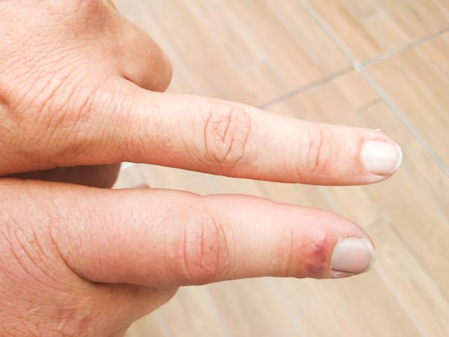

Síntomas
Cambio de color en orina
Incluida orina espumosa o con sangre, más o menos orina que la habitual o necesidad de levantarse a la noche para orinar.
Fatiga

Falta de energía habitual o sensación de mucho cansancio.
Picazón
Los desechos que se acumulan en la sangre pueden provocar picazón intensa.
Hinchazón de manos o pies
La hinchazón puede producirse cuando los riñones no eliminan el líquido extra con el transcurso del tiempo.
Falta de aire
El líquido extra que los riñones no eliminan puede acumularse en los pulmones; la falta de aire también puede estar causada por la anemia.
Dolor en la parte baja de la espalda
Dolor que se ubica cerca de los riñones que no cambia o empeora cuando se mueve o se estira.